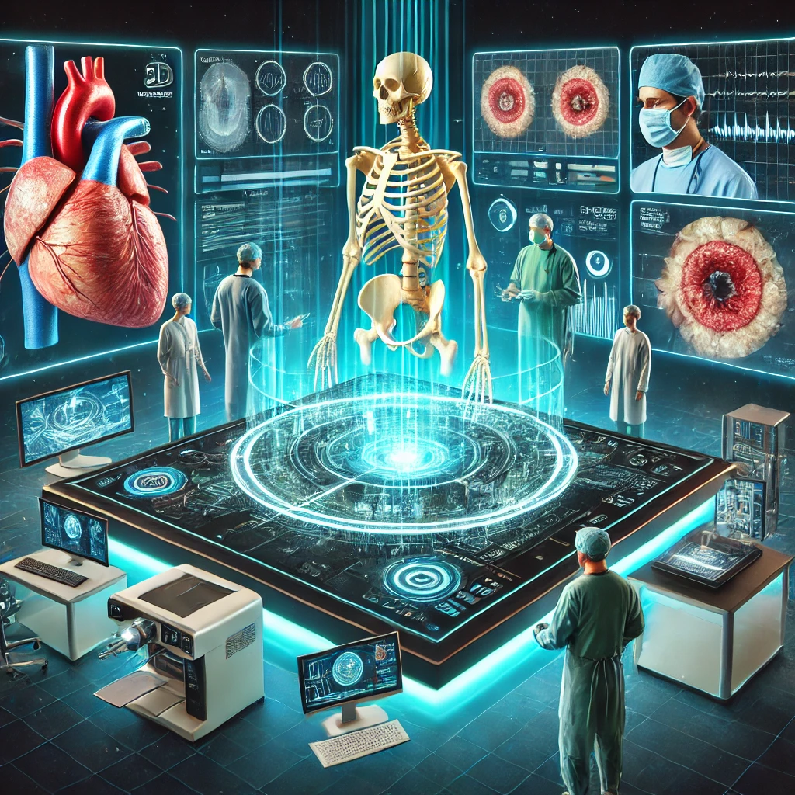
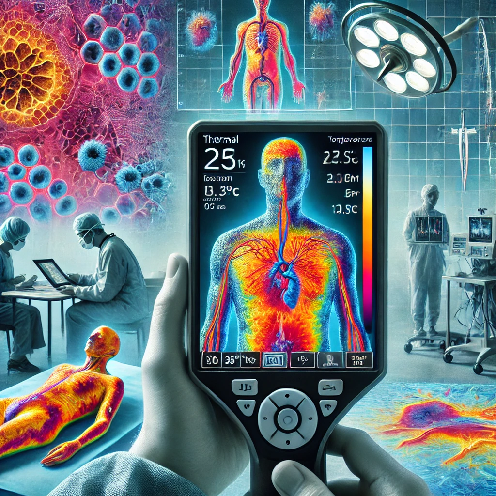
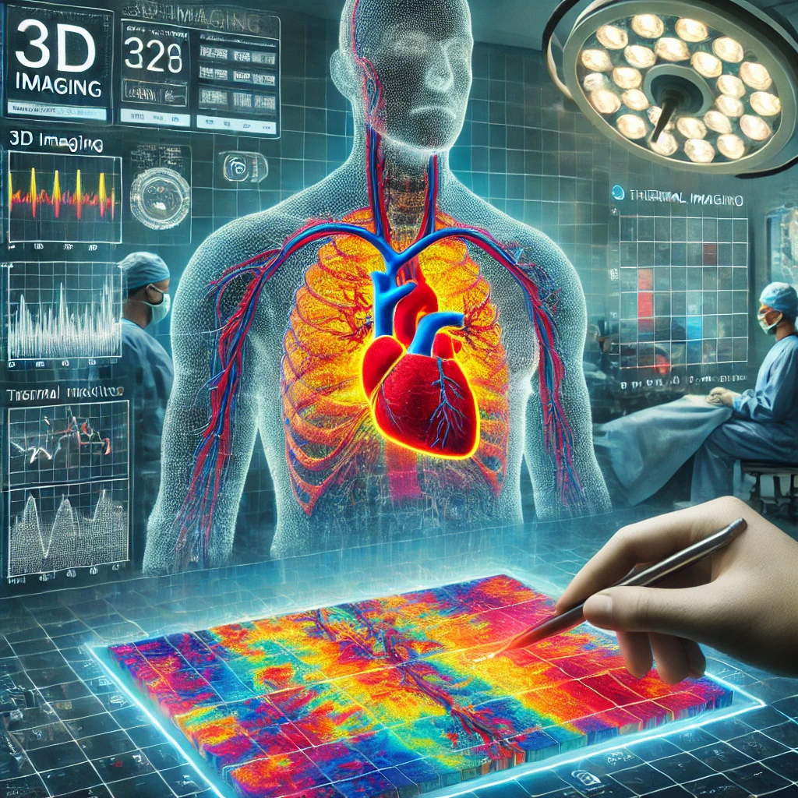

Transforming Healthcare with Technology and AI: A Continuous Era in Medicine
The role of 3D imaging
3D imaging is redefining healthcare by enabling surgeons to create precise anatomical models for preoperative planning, surgical simulations, and risk assessments.
This technology is a cornerstone of modern medicine, ensuring better precision, safety, and outcomes.
A Closer Look at Thermal Imaging
Thermal imaging detects temperature variations in tissue, providing insights into inflammation, infection, and blood flow
A Complete Picture: Merging 3D & Thermal imaging

Model Wound Closures: Use 3D imaging to visualize how a wound might close over time and simulate different closure methods, helping to plan more effective treatments.
Assess Limb Functionality: By analyzing 3D scans of soft tissues and joints, the tool can simulate and predict how surgery or treatment will impact limb mobility and functionality.
Overlay Thermal Imaging and Ultrasound Data: Combine real-time thermal imaging with 3D anatomical scans and ultrasound data to provide a detailed, multi-layered assessment of blood supply and tissue health, ensuring better reconstruction planning.
We want to create a tool that integrates 3D imaging and thermal imaging with AI to offer a complete view of soft tissue health and structure. This innovation could: